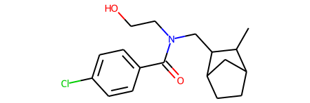
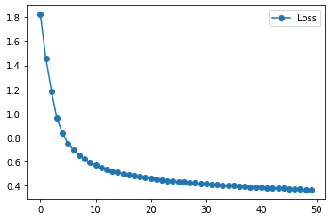
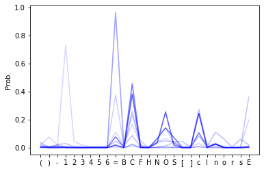
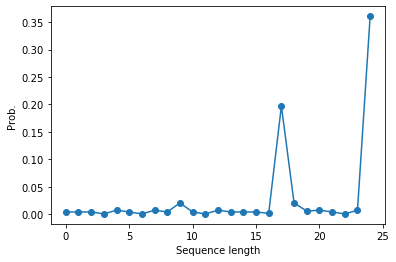

import numpy as np
from collections import OrderedDict
from itertools import chain
from rdkit import Chem
from sklearn.utils import shuffle
from matplotlib import pyplot as plt
import tensorflow as tf
from tensorflow.keras.models import Sequential, Model
from tensorflow.keras.layers import Dense
from tensorflow.keras.layers import Dropout
from tensorflow.keras.layers import LSTM
Exercise: Molecule Generation with an RNN¶
In this exercise sheet we will be generating molecules using the simplified molecular-input line-entry system (SMILES). This system allows to describe the structure of chemical species in the form of a line notation, making it suited for a machine learning approach with recurrent neural networks. The data can be obtained from 3.
# Load the data
train_data = np.genfromtxt('smiles.csv',dtype='U')
“train_data” contains strings of characters that encode molecules, which you can visualize with the rdkit package 4.
train_data[:5]
array(['CC1C2CCC(C2)C1CN(CCO)C(=O)c1ccc(Cl)cc1',
'COc1ccc(-c2cc(=O)c3c(O)c(OC)c(OC)cc3o2)cc1O',
'CCOC(=O)c1ncn2c1CN(C)C(=O)c1cc(F)ccc1-2',
'Clc1ccccc1-c1nc(-c2ccncc2)no1',
'CC(C)(Oc1ccc(Cl)cc1)C(=O)OCc1cccc(CO)n1'], dtype='<U53')
# Note that this will only work if you installed the rdkit package!
Chem.MolFromSmiles(train_data[0])

Preparations¶
In order to make the data usable for a neural network we have to generate a mapping from characters to integers and vice versa.
# creating mapping for each char to integer, also mapping for the E (end) is manually inserted into the dictionaries.
unique_chars = sorted(list(OrderedDict.fromkeys(chain.from_iterable(train_data))))
# maps each unique character as int
char_to_int = dict((c, i) for i, c in enumerate(unique_chars))
# int to char dictionary
int_to_char = dict((i, c) for i, c in enumerate(unique_chars))
char_to_int
{'(': 0,
')': 1,
'-': 2,
'1': 3,
'2': 4,
'3': 5,
'4': 6,
'5': 7,
'6': 8,
'=': 9,
'B': 10,
'C': 11,
'F': 12,
'H': 13,
'N': 14,
'O': 15,
'S': 16,
'[': 17,
']': 18,
'c': 19,
'l': 20,
'n': 21,
'o': 22,
'r': 23,
's': 24}
int_to_char
{0: '(',
1: ')',
2: '-',
3: '1',
4: '2',
5: '3',
6: '4',
7: '5',
8: '6',
9: '=',
10: 'B',
11: 'C',
12: 'F',
13: 'H',
14: 'N',
15: 'O',
16: 'S',
17: '[',
18: ']',
19: 'c',
20: 'l',
21: 'n',
22: 'o',
23: 'r',
24: 's'}
The dataset contains sequences of varying length, which usually isn’t a problem when using a RNN. In the next exercise however we want to use batch training, which requires all sequences in the batch to be of equal length. We therefore have to append each sequence with an appropriate number of end characters ”E” to ensure an equal length. Before we do that we add “E” to our dictionary.
# add stop letter to dictionary
char_to_int.update({"E" : len(char_to_int)})
int_to_char.update({len(int_to_char) : "E"})
# how many unique characters do we have?
mapping_size = len(char_to_int)
reverse_mapping_size = len(int_to_char)
print ("Size of the character to integer dictionary is: ", mapping_size)
print ("Size of the integer to character dictionary is: ", reverse_mapping_size)
Size of the character to integer dictionary is: 26
Size of the integer to character dictionary is: 26
We want to train the RNN in a many-to-many approach, in which we always predict the respective next character in the sequence. The resulting dimension of both X and Y array should be (number of training samples, length of sequences, length of dictionary). The last dimension is used as a one-hot-encoding of the respective character. We create this encoding by iterating over the dataset, taking all characters of each sequence except for the last one as part of X, and all characters of each sequence except for the first one as part of Y.
# Generate the datasets
def gen_data(data, int_to_char, char_to_int, embed):
one_hot = np.zeros((data.shape[0], embed+1, len(char_to_int)),dtype=np.int8)
for i,smile in enumerate(data):
#encode the chars
for j,c in enumerate(smile):
one_hot[i,j,char_to_int[c]] = 1
#Encode endchar
one_hot[i,len(smile):,char_to_int["E"]] = 1
#Return two, one for input and the other for output
return one_hot[:,0:-1,:], one_hot[:,1:,:]
# get longest sequence
embed = max([len(seq) for seq in train_data])
# Get datasets
X, Y = gen_data(train_data, int_to_char, char_to_int, embed)
X, Y = shuffle(X, Y)
Training the RNN¶
Now we want to build and train the neural network. In order to account for different sequence lengths in the evaluation, we specify the first input dimension to the LSTM as ”None”.
"""CREATING THE LSTM MODEL """
# Create the model (simple 2 layer LSTM)
model = Sequential()
model.add(LSTM(256, input_shape=(None, X.shape[2]), return_sequences = True))
model.add(Dropout(0.25))
model.add(LSTM(256, return_sequences = True))
model.add(Dropout(0.25))
model.add(Dense(Y.shape[-1], activation='softmax'))
print (model.summary())
Model: "sequential"
_________________________________________________________________
Layer (type) Output Shape Param #
=================================================================
lstm (LSTM) (None, None, 256) 289792
_________________________________________________________________
dropout (Dropout) (None, None, 256) 0
_________________________________________________________________
lstm_1 (LSTM) (None, None, 256) 525312
_________________________________________________________________
dropout_1 (Dropout) (None, None, 256) 0
_________________________________________________________________
dense (Dense) (None, None, 26) 6682
=================================================================
Total params: 821,786
Trainable params: 821,786
Non-trainable params: 0
_________________________________________________________________
None
# Compile the model
model.compile(loss = 'categorical_crossentropy', optimizer='adam')
# Fit the model
history = model.fit(X, Y, epochs = 50, batch_size = 256)
Epoch 1/50
59/59 [==============================] - 33s 554ms/step - loss: 1.8214
Epoch 2/50
59/59 [==============================] - 34s 582ms/step - loss: 1.4516
Epoch 3/50
59/59 [==============================] - 35s 596ms/step - loss: 1.1849
Epoch 4/50
59/59 [==============================] - 35s 588ms/step - loss: 0.9608
Epoch 5/50
59/59 [==============================] - 32s 544ms/step - loss: 0.8348
Epoch 6/50
59/59 [==============================] - 32s 546ms/step - loss: 0.7496
Epoch 7/50
59/59 [==============================] - 31s 531ms/step - loss: 0.6975
Epoch 8/50
59/59 [==============================] - 31s 525ms/step - loss: 0.6551
Epoch 9/50
59/59 [==============================] - 32s 545ms/step - loss: 0.6209
Epoch 10/50
59/59 [==============================] - 31s 529ms/step - loss: 0.5963
Epoch 11/50
59/59 [==============================] - 31s 531ms/step - loss: 0.5704
Epoch 12/50
59/59 [==============================] - 31s 532ms/step - loss: 0.5532
Epoch 13/50
59/59 [==============================] - 32s 544ms/step - loss: 0.5366
Epoch 14/50
59/59 [==============================] - 31s 532ms/step - loss: 0.5219
Epoch 15/50
59/59 [==============================] - 31s 531ms/step - loss: 0.5097
Epoch 16/50
59/59 [==============================] - 31s 529ms/step - loss: 0.4999
Epoch 17/50
59/59 [==============================] - 32s 543ms/step - loss: 0.4891
Epoch 18/50
59/59 [==============================] - 32s 546ms/step - loss: 0.4835
Epoch 19/50
59/59 [==============================] - 34s 575ms/step - loss: 0.4734
Epoch 20/50
59/59 [==============================] - 32s 539ms/step - loss: 0.4662
Epoch 21/50
59/59 [==============================] - 31s 533ms/step - loss: 0.4590
Epoch 22/50
59/59 [==============================] - 31s 532ms/step - loss: 0.4538
Epoch 23/50
59/59 [==============================] - 31s 533ms/step - loss: 0.4497
Epoch 24/50
59/59 [==============================] - 32s 538ms/step - loss: 0.4432
Epoch 25/50
59/59 [==============================] - 32s 537ms/step - loss: 0.4391
Epoch 26/50
59/59 [==============================] - 31s 532ms/step - loss: 0.4340
Epoch 27/50
59/59 [==============================] - 31s 530ms/step - loss: 0.4305
Epoch 28/50
59/59 [==============================] - 32s 538ms/step - loss: 0.4274
Epoch 29/50
59/59 [==============================] - 31s 529ms/step - loss: 0.4226
Epoch 30/50
59/59 [==============================] - 31s 531ms/step - loss: 0.4190
Epoch 31/50
59/59 [==============================] - 31s 528ms/step - loss: 0.4146
Epoch 32/50
59/59 [==============================] - 31s 534ms/step - loss: 0.4111
Epoch 33/50
59/59 [==============================] - 31s 527ms/step - loss: 0.4089
Epoch 34/50
59/59 [==============================] - 31s 528ms/step - loss: 0.4042
Epoch 35/50
59/59 [==============================] - 31s 529ms/step - loss: 0.4020
Epoch 36/50
59/59 [==============================] - 31s 531ms/step - loss: 0.3993
Epoch 37/50
59/59 [==============================] - 31s 528ms/step - loss: 0.3953
Epoch 38/50
59/59 [==============================] - 31s 527ms/step - loss: 0.3926
Epoch 39/50
59/59 [==============================] - 31s 532ms/step - loss: 0.3916
Epoch 40/50
59/59 [==============================] - 31s 530ms/step - loss: 0.3878
Epoch 41/50
59/59 [==============================] - 32s 542ms/step - loss: 0.3860
Epoch 42/50
59/59 [==============================] - 32s 539ms/step - loss: 0.3843
Epoch 43/50
59/59 [==============================] - 32s 538ms/step - loss: 0.3811
Epoch 44/50
59/59 [==============================] - 31s 525ms/step - loss: 0.3797
Epoch 45/50
59/59 [==============================] - 31s 533ms/step - loss: 0.3773
Epoch 46/50
59/59 [==============================] - 31s 525ms/step - loss: 0.3743
Epoch 47/50
59/59 [==============================] - 32s 534ms/step - loss: 0.3725
Epoch 48/50
59/59 [==============================] - 31s 526ms/step - loss: 0.3709
Epoch 49/50
59/59 [==============================] - 32s 541ms/step - loss: 0.3686
Epoch 50/50
59/59 [==============================] - 31s 526ms/step - loss: 0.3667
Interlude: How to store and load keras models¶
Your saved model will include:
The model’s architecture/config
The model’s weight values (which were learned during training)
The model’s compilation information (if compile()) was called
The optimizer and its state, if any (this enables you to restart training where you left)
# Store to not having to train again...
model.save("twolayerlstm")
# Load to continue training or evaluate...
model = tf.keras.models.load_model("twolayerlstm")
plt.plot(history.history["loss"], '-o', label="Loss")
plt.legend()

Evaluation¶
The average success rate on the training set is the percentage of characters correctly predicted by the network.
"""Predictions"""
# Calculate predictions
predictions = model.predict(X, verbose=0)
# Compare to correct result
train_res = np.argmax(Y,axis=2)-np.argmax(predictions,axis=2)
# Count correct and incorrect predictions
no_false = np.count_nonzero(train_res)
no_true = len(Y)*embed-no_false
print("Average success rate on training set: %s %%" %str(np.round(100*no_true/(embed*len(Y)),2)))
Average success rate on training set: 87.76 %
# Take a look at the model predictions on the training set next to the true result
for i in range(40):
v = model.predict(X[i:i+1])
idxs = np.argmax(v, axis=2)
pred= "".join([int_to_char[h] for h in idxs[0]])
# Note that here we use the argmax and do not sample using the model output
idxs2 = np.argmax(Y[i:i+1], axis=2)
true = "".join([int_to_char[k] for k in idxs2[0]])
if true != pred:
print (true, pred)
CCCNC(=O)CSc1nnc(CC)n1NEEEEEEEEEEEEEEEEEEEEEEEEEEEEEE C(((C(=O)CSc1nnc(-))n1NEEEEEEEEEEEEEEEEEEEEEEEEEEEEEE
c1nc(S(=O)(=O)N(C)C2CCCCC2)cn1CEEEEEEEEEEEEEEEEEEEEEE C1cc(NC=O)(=O)N2C)C)CCCCC2)c(1CEEEEEEEEEEEEEEEEEEEEEE
n1ccnc1SCC(=O)c1ccc(Cl)cc1ClEEEEEEEEEEEEEEEEEEEEEEEEE C1c((c1SCC(=O)N1ccc(Cl)cc1ElEEEEEEEEEEEEEEEEEEEEEEEEE
n1cc(CNC(=O)c2sc3cccc(Cl)c3c2Cl)cn1EEEEEEEEEEEEEEEEEE C1c((C(C(=O)c2cc3c(cccC))c3n2=))nc1EEEEEEEEEEEEEEEEEE
=c1oc2ccccc2cc1S(=O)(=O)c1ccc(F)cc1EEEEEEEEEEEEEEEEEE =C1cc2ccccc2c(1C(=O)(=O)c1ccc(C)cc1EEEEEEEEEEEEEEEEEE
=CC(O)C(Oc1ccccc1)n1nnc2ccccc21EEEEEEEEEEEEEEEEEEEEEE CCCNCcC(C)1ccccc1)C1nnc2ccccc21EEEEEEEEEEEEEEEEEEEEEE
=C(Nc1cccc2ncccc12)c1ccc2[nH]c(=O)c(=O)[nH]c2c1EEEEEE =C(Cc1cccccccnnc12)c1cccccnH]c(=O)[c=O)[nH]c2c1EEEEEE
OC(=O)c1ccc(NC(=O)CCn2c(=O)oc3ccccc32)cc1EEEEEEEEEEEE Cc(=O)c1ccc(NC(=O)COc2c(=O)oc3ccccc32)cc1EEEEEEEEEEEE
c1cc(SCC(N)=O)n2c(nc3ccccc32)c1CEEEEEEEEEEEEEEEEEEEEE C1cccC(C(=)=O)nnc3-c3ccccc32)n1CEEEEEEEEEEEEEEEEEEEEE
Oc1ccc(C2NC(=O)c3c(sc(C)c3C)N2)cc1EEEEEEEEEEEEEEEEEEE Cc1ccc(C(CC(=O)c3cccc3=)c3C)c2)cc1EEEEEEEEEEEEEEEEEEE
Oc1ccc(C(=O)c2nc3ccccc3n2C)cc1EEEEEEEEEEEEEEEEEEEEEEE Cc1ccc(C(=O)N2cc(ccccc3n2C)cc1EEEEEEEEEEEEEEEEEEEEEEE
lc1ccc(-c2noc(-c3ccncc3)n2)cc1EEEEEEEEEEEEEEEEEEEEEEE Cc1ccc(Cc2nnc(Cc3ccccc3)n2)cc1EEEEEEEEEEEEEEEEEEEEEEE
c1ccc(Cn2ccc(=O)c(OCc3ccccc3)c2C)cc1EEEEEEEEEEEEEEEEE C1ccc(C(2c(c(CO)c(=CC3ccccc3)n2N)cc1EEEEEEEEEEEEEEEEE
CC1Sc2sc(=O)sc2SC(CC)C1=OEEEEEEEEEEEEEEEEEEEEEEEEEEEE C((Cc2cc(NO)cc2N((=)(C1=OEEEEEEEEEEEEEEEEEEEEEEEEEEEE
C(=O)NCCc1nc2ccccc2n1Cc1ccccc1EEEEEEEEEEEEEEEEEEEEEEE C(=O)NcCC1cc2ccccc2n1Cc1ccccc1EEEEEEEEEEEEEEEEEEEEEEE
c1ccccc1OCCCC(=O)Nc1nccs1EEEEEEEEEEEEEEEEEEEEEEEEEEEE C1ccc((1NCC(N(=O)Nc1cccs1EEEEEEEEEEEEEEEEEEEEEEEEEEEE
1ccc2c(c1)NC(c1ccc3c(c1)OCO3)n1nnnc1-2EEEEEEEEEEEEEEE 1ccc(c(c1)N((=1ccccc(c1)OCO3)C1cccc1-2EEEEEEEEEEEEEEE
C(=O)c1ccc(NC(=O)N2CCc3ccccc3C2)cc1EEEEEEEEEEEEEEEEEE C(=O)N1ccc(NC(=O)CcCCC3ccccc322)cc1EEEEEEEEEEEEEEEEEE
COC(=O)CSc1nc(C)c(Oc2ccccc2)c(=O)[nH]1EEEEEEEEEEEEEEE C(C(=O)c1c1nn2-)c(CC2ccccc2)n(=O)[nH]1EEEEEEEEEEEEEEE
C(=O)Oc1cccc(C(=O)Nc2cccc(C)n2)c1EEEEEEEEEEEEEEEEEEEE C(=O)Nc1ccc((C(=O)Nc2cccccC(c2)c1EEEEEEEEEEEEEEEEEEEE
=C(NCc1ccccc1)c1noc2c1CCc1ccccc1-2EEEEEEEEEEEEEEEEEEE =C(Ccc1ccccc1)c1ccc2c1CCC2ccccc122EEEEEEEEEEEEEEEEEEE
N(C)c1ccc(C(=O)CC2(O)C(=O)Nc3ccccc32)cc1EEEEEEEEEEEEE C(C)C1ccc(C(=O)NOC(C)C(=O)Nc3ccccc32)cc1EEEEEEEEEEEEE
c1cc(C)n2c(SCC(=O)NCC(F)(F)F)nnc2n1EEEEEEEEEEEEEEEEEE C1cccC)c(n(SCC(=O)NCc3=)(F)F)ncc2n1EEEEEEEEEEEEEEEEEE
COc1cccc(C2C(C(N)=O)C(C)=Nc3nnnn32)c1EEEEEEEEEEEEEEEE C(C1ccc(cC(CC=)F)=O)C(=)(OC3ncnn32)c1EEEEEEEEEEEEEEEE
Oc1ccc(N(CC(=O)N2CCCCCC2)S(C)(=O)=O)cc1EEEEEEEEEEEEEE Cc1ccc(CCCC(=O)NCCCCCC22)C(C)(=O)=O)cc1EEEEEEEEEEEEEE
Oc1cccc(CC(=O)Nc2nc3c(s2)C(=O)CC(C)(C)C3)c1EEEEEEEEEE Cc1ccc(cC((=O)Nc2cc(ccs2)CCCO)CC3C)CC)C3)c1EEEEEEEEEE
=S(=O)(Cc1cc(-c2ccccc2)n[nH]1)c1ccccc1EEEEEEEEEEEEEEE =C(=O)(Nc1cccCc2ccccc2)nonH]1)N1ccccc1EEEEEEEEEEEEEEE
c1cccc(-n2ncc3c(=O)n(Cc4ccccn4)cnc32)c1CEEEEEEEEEEEEE C1ccc((Nc2nnc3c(=O)n(CC4ccccc4)nnc32)c1EEEEEEEEEEEEEE
CCNC(=O)Cn1nc(CC)n2c(cc3occc32)c1=OEEEEEEEEEEEEEEEEEE C((C(=O)CS1cn(C()ccc3=c3cccc32)c1=OEEEEEEEEEEEEEEEEEE
c1cc(Cl)ccc1OC(C)C(=O)Nc1ccc(C(N)=O)cc1EEEEEEEEEEEEEE C1cccC))ccc1NCCC)C(=O)NC1ccccCEN)=O)cc1EEEEEEEEEEEEEE
=C(Cn1nc(-c2cccs2)ccc1=O)Nc1nccs1EEEEEEEEEEEEEEEEEEEE =C(CO1cn(-c2cccc2)ccc1=O)NC1cccs1EEEEEEEEEEEEEEEEEEEE
CNC(=O)n1cc(-c2ccnc3ccccc23)c(-c2ccccn2)n1EEEEEEEEEEE C(((=O)C1c((-c2cccccccccc23)n(Cc2ccccc2)n1EEEEEEEEEEE
COC(=O)NS(=O)(=O)c1ccc(OC)cc1EEEEEEEEEEEEEEEEEEEEEEEE C(C(=O)c1c=O)(=O)c1ccc(CC)c(1EEEEEEEEEEEEEEEEEEEEEEEE
OC(=O)c1cnn2c(C(F)(F)Cl)cc(C)nc12EEEEEEEEEEEEEEEEEEEE Cc(=O)c1ccc(c(-(F)(F)Fl)cc(C(n112EEEEEEEEEEEEEEEEEEEE
Oc1cc(N)c(-c2nc3ccccc3[nH]2)cc1OCEEEEEEEEEEEEEEEEEEEE Cc1cccCCc(Cc2cn3ccccc3nnH]2)cc1OCEEEEEEEEEEEEEEEEEEEE
COc1ccccc1NC(=O)CSc1ccc2c(c1)OCCO2EEEEEEEEEEEEEEEEEEE C(C1ccc(c1NC(=O)COc1ncccc(c1)OCOO2EEEEEEEEEEEEEEEEEEE
COCCOc1cccc(C(=O)NC2CCCCC2)c1EEEEEEEEEEEEEEEEEEEEEEEE C(C(NC1ccc(cC(=O)NC2CCCCC2)c1EEEEEEEEEEEEEEEEEEEEEEEE
c1nc(COc2ccc(Cl)cc2Cl)n[nH]1EEEEEEEEEEEEEEEEEEEEEEEEE E1cc(N(c2ccccCl)cc2)l)nnnH]1EEEEEEEEEEEEEEEEEEEEEEEEE
Oc1ccc(-c2csnn2)cc1S(=O)(=O)Nc1ccccc1EEEEEEEEEEEEEEEE Cc1ccc(Cc2nccc2)c(1C(=O)(=O)NC1ccccc1EEEEEEEEEEEEEEEE
To generate a sequence of SMILES characters starting from a single start character until the end letter ”E” appears requires a sampling step, where we use the probability distribution over the characters produced by the network at each step to sample the next letter.
def gen_mol(model, start_char):
# Array of probabilities
preds = []
# Start character
x = np.zeros((1,1,26))
x[0,0,char_to_int[start_char]] = 1
stringc = start_char
# Predict first character by randomly sampling from model output
pred = model.predict(x).flatten()
ch = int_to_char[np.random.choice(np.arange(0,len(char_to_int)), p=pred)]
preds.append(pred)
stringc += ch
x1 = np.zeros((1,1,26))
x1[0,0,char_to_int[ch]] = 1
x = np.append(x,x1,axis=1)
# Continue as long as we do not add 'E'
while ch !='E':
pred = model.predict(np.expand_dims(x[:,-1,:],axis = 1)).flatten()
ch = int_to_char[np.random.choice(np.arange(0,len(char_to_int)), size=None, replace=True, p=pred)]
preds.append(pred)
x1 = np.zeros((1,1,26))
x1[0,0,char_to_int[ch]] = 1
x = np.append(x,x1,axis=1)
stringc += ch
print(stringc)
return np.array(preds)
# Let's try it out!
preds = gen_mol(model, 'C')
CCCO=CO=C)CO=CCCc1)(=CO=NE
# Plot probability distributions with opacity given by the order in the sequence
fig, ax = plt.subplots()
for i in range(len(preds)):
ax.plot(preds[i,:], 'b', alpha=min(i * 0.01, 1))
ax.set_xticks(np.arange(0,len(char_to_int)))
ax.set_xticklabels(list(char_to_int.keys()))
plt.ylabel('Prob.')
plt.show()

# The longer the sequence gets, the higher the probability of 'E' should get.
plt.plot(preds[:,-1],'-o')
plt.ylabel('Prob.')
plt.xlabel('Sequence length')
plt.show()
